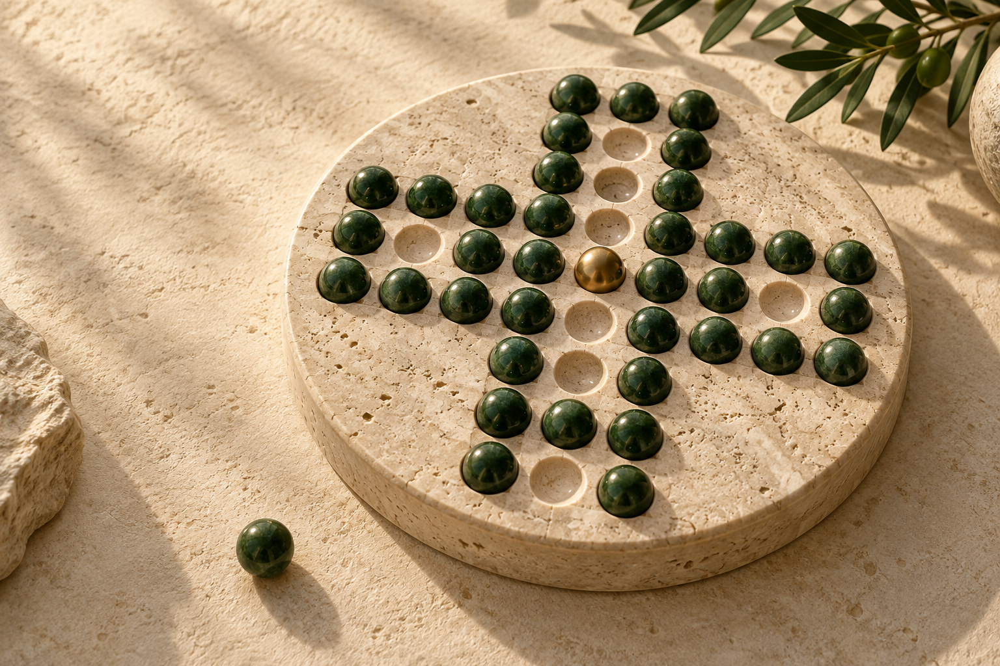

Üç tahta geometrisiThree board geometries
Üçgen, artı ve kare tahtalarda geçerli atlamaları ve bağlantıların etkisini keşfet.Explore valid jumps and the effect of board connections across triangle, cross, and square layouts.
♟ Sakin bir mantık yolculuğu♟ A quiet journey in logic
Her hamlede kendi ritmini bul. Taşları atlat, tahtanın geometrisini keşfet ve sonunda geriye tek taş bırak.Find your rhythm, one thoughtful move at a time. Jump the stones, explore each board’s geometry, and leave exactly one behind.

6 koleksiyon · 120 bulmaca6 collections · 120 puzzles
Atölyeden başlayıp altı koleksiyon boyunca ilerle. Her bölüm çözüm, hedef ve hamle zinciri için ayrı ustalık damgaları sunar.Begin in the atelier and progress through six collections. Each puzzle offers separate mastery badges for solving, targets, and move chains.
Üçgen, artı ve kare tahtalarda geçerli atlamaları ve bağlantıların etkisini keşfet.Explore valid jumps and the effect of board connections across triangle, cross, and square layouts.
Sabit 90 bulmacalık havuzdan seçilen günlük meydan okumayı dene; haftalık serini takip et.Try a daily challenge selected from a fixed set of 90 puzzles and follow your weekly streak.
Zaman sayacı yok. Geri alma ve sınırlı ipuçları ücretsiz; her hamle cihazına kaydedilir.No countdown. Undo and bounded hints are free, and each move is saved on your device.
Bulmacalar ve ilerleme cihazında kalır. Hesap veya bağlantı, temel oyunu oynamak için gerekmez.Puzzles and progress stay on your device. No account or connection is required for core play.